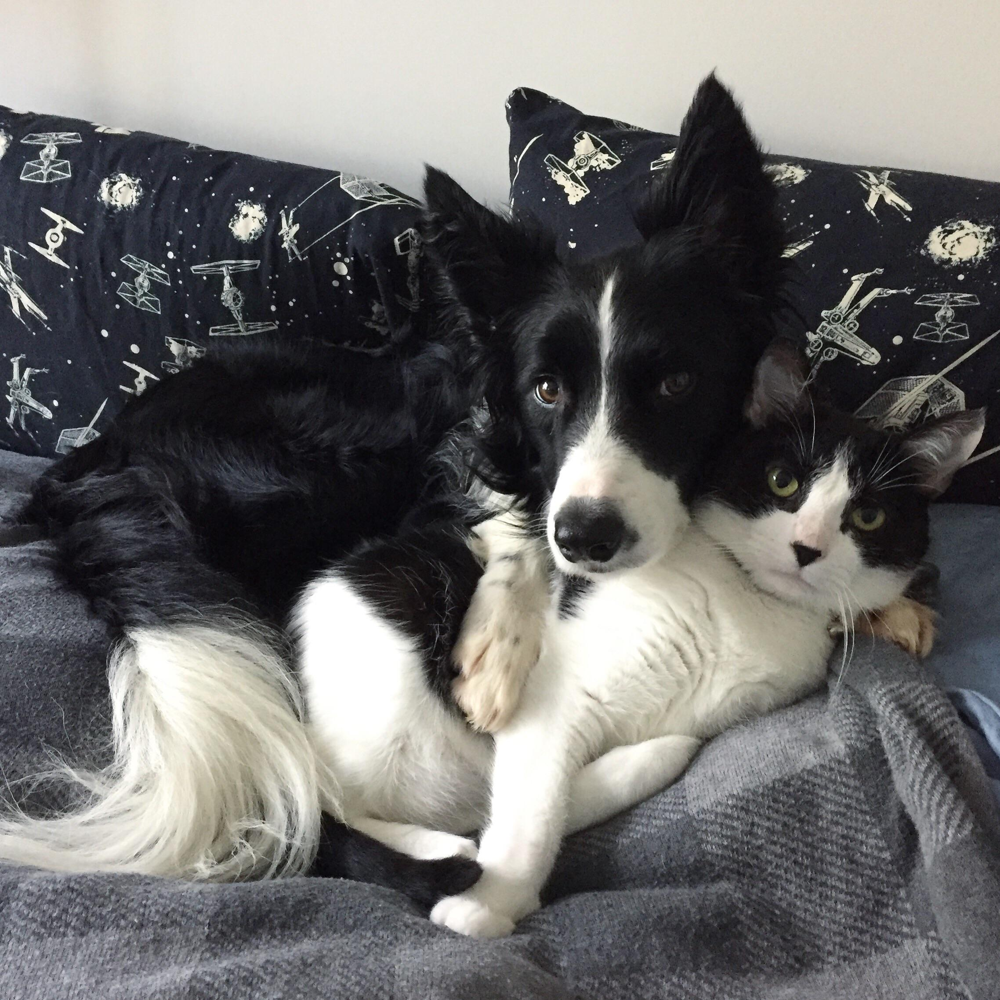
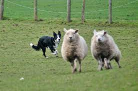
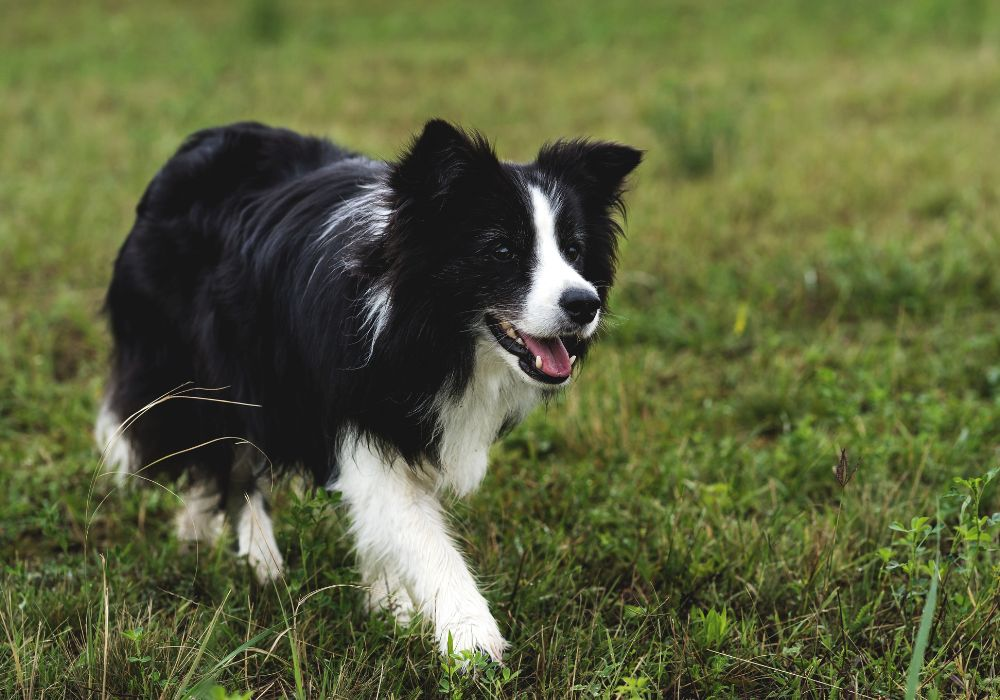
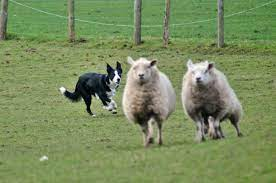
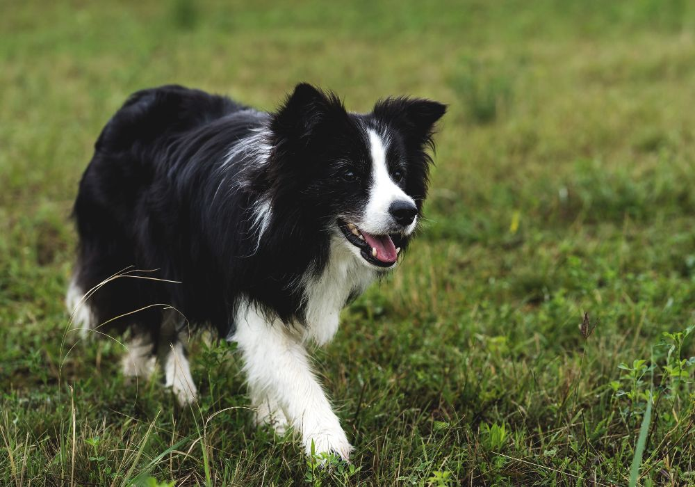

Pets
Bacon Q Dog

Bacon Q. Dog is a 9yr old labradoodle. He prefers to spend his days lounging among the three different beds/couches that his family has gifted him. He enjoys a walk or two around the neighborhood, as long as he can pretend that he doesn't see any of the other animals to avoid the embarrassment of not wanting to admit he has no wolf-like skills in chasing them.
At night just as the rest of the family is ready to relax, Bacon suddenly wants to release all of his energy. He will place his toys on a mini couch and frantically drag the couch around, giving his toys "a ride." There is also a lot of rolling. Lots and lots of rolling.
Photo Gallery


Likes
- Belly rubs
- Playing tug-of-war
- Sneaking onto the couch
Sprout

This is Sprout as a kitten, in the new home, in their first photo together with Kai.
"Sprout, a shy and elusive kitten when he first arrived at four months old, gradually became an affectionate companion. He enjoyed sleeping on my bed, but his early morning wake-up calls at 6:30 AM were a daily routine.
During my challenging academic phase, Sprout became my constant companion during late-night drawing sessions, quietly curling up on my lap, providing comfort and banishing solitude.
Photo Gallery


Likes
- Egg
- Playing with Naer and my tennis string
- Sleeping in the sunshine
Max
Max is a very active dog, with black and white fur and a long tail.
Standing at an impressive 24 inches tall at the shoulder, Max carries himself with an air of gentle dignity that belies his goofy and lovable nature. His well-muscled body is the embodiment of strength and agility, yet his graceful movements make him seem almost weightless as he bounds through life with unbridled enthusiasm.
Max's tail is a wagging metronome, never failing to convey his boundless joy and affection. When he's not running freely through the backyard or chasing after tennis balls, he can often be found sitting regally on his plush, royal blue cushion, surveying his domain like a benevolent monarch. His favorite pastime, however, is engaging in epic games of fetch, showcasing his remarkable agility as he leaps into the air to catch flying discs with astounding precision.
Photo Gallery
 



Likes
- Fetching
- Running
- Okaying with other dogs
- Chasing squirrels
Antonella